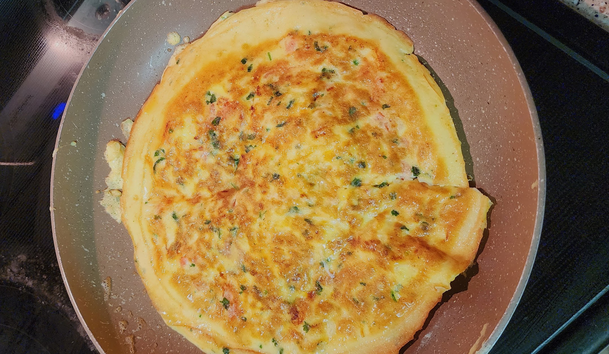

Chicken, Cheese, and Vegetable Omlette

My go-to omelette combination! I have very specific measurement preferences, but everything can be adjusted easily.
Ingredients
- 3-4 eggs
- 1 tomato
- 0.125 onion
- sprinkle of coriander
- salt and pepper to taste
- last night's leftover chicken
Steps
- Crack the eggs into a bowl.
- Chop the tomato and onion and add to bowl. Beat well.
- Add a sprinkle of coriander. Add salt and pepper to taste. Beat well.
- Microwave leftover chicken and cut into small pieces. Add to bowl and beat well.
- Place a small amount of oil on frying pan and allow it to warm up at medium to high heat. Tilt until the oil covers the whole pan.
- Pour the egg mixture into the pan. When the edges start to solidify, run the spatula under them so that the
omelette is not stuck to the pan.
- Flip omelette and allow other side to cook once the bottom starts browning.
- After the new bottom has been on the frying pan for about 30 seconds, add cheese to one half of the omelette.
Fold it in half and enjoy.